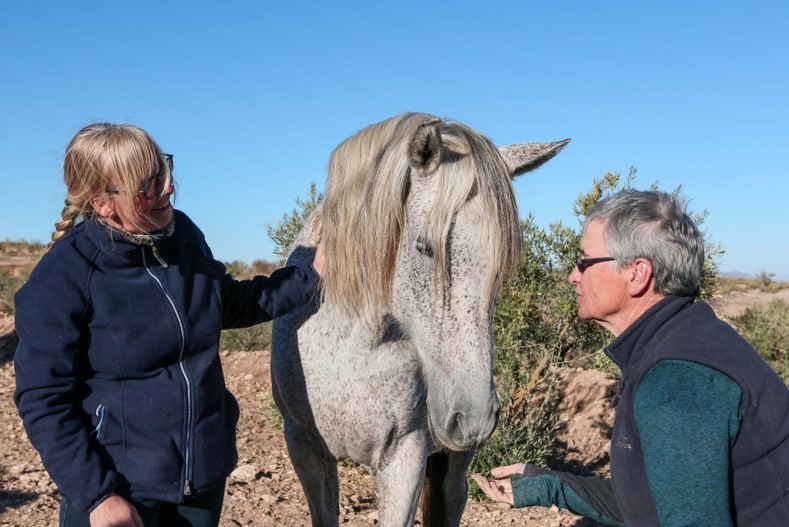

EMOCJE I SYGNAŁY USPOKAJAJĄCE U KONI.
Pierwsze w Polsce seminarium dotyczące systemów emocjonalnych, języka ciała i sygnałów uspokajających u koni. Klucz do zrozumienia konia i budowania więzi ze zwierzęciem. To seminarium, które może w każdym jego uczestniku – jeźdźcu, trenerze, opiekunie konia czy lekarzu weterynarii – zapoczątkować wielką zmianę w podejściu do konia i relacji z nim.
data: 2-3 czerwca 2018, 9:00-17:00
prowadzący: Rachel Bedingfield (Connection Training, Wielka Brytania) i Rachaël Draaisma (Calming Signals of Horses,Holandia).
miejsce: Warszawa.
cena:
300 zł/jeden dzień, 450 zł/dwa dni – do 30 kwietnia 2018.
400 zł/jeden dzień, 600 zł/dwa dni – od 1 maja 2018.
- Cena obejmuje poczęstunek.
- Seminarium będzie tłumaczone z języka angielskiego na polski symultanicznie, jeśli liczba uczestników przekroczy 120 osób. W przypadku niższej liczby uczestników zapewniamy tłumaczenie konsekutywne.
- Uczestnicy otrzymają świadectwa udziału w seminarium.
Program:
sobota, 2 czerwca 2018 9:00-17:00
prowadząca: Rachel Bedingfield.
Wykłady Rachel Bedingfield są wynikiem obserwacji zarówno wolno żyjących koni jak koni domowych, oraz jej studiów nad systemami emocjonalnymi w ujęciu Jaaka Pankseppa. Jako trenerka koni posługująca się w pracy wzmocnieniem pozytywnym, Rachel Bedingfield tłumaczy wpływ stanów emocjonalnych koni na ich zdolności poznawcze, chęć uczenia się i budowania więzi z człowiekiem.
Emocje u koni
- Czym są emocje i dlaczego należy je brać pod uwagę.
- Systemy emocjonalne ssaków w ujęciu Jaaka Pankseppa.
- Ekspresja systemów emocjonalnych u koni.
- Emocje a dobrostan koni.
- Rola emocji w szkoleniu koni.
- Porównanie wpływu szkolenia przy użyciu wzmocnienia pozytywnego i negatywnego na emocje i zachowanie koni.
- System POSZUKIWANIA jako kluczowy w procesach uczenia się.
- Sposoby radzenia sobie ze STRACHEM i SMUTKIEM STRATY.
- W jaki sposób aktywizować systemy ZABAWY i OPIEKI.
- Ćwiczenia i zabawy wzmacniające więź z koniem.
niedziela, 3 czerwca 2018 9:00-17:00
prowadząca: Rachaël Draaisma.
Wykłady Rachaël Draaismay stanowią podsumowanie 4 lat badań prowadzonych przez nią pod opieką Turid Rugaas, eksperta w dziedzinie sygnałów uspokajających u psów. Wykłady, bogato ilustrowane materiałem filmowym zebranym do celów badawczych, wprowadzają w świat bardzo subtelnego języka koni, którego poznanie umożliwia człowiekowi nawiązanie nowej nici porozumienia ze zwierzęciem.
Sygnały uspokajające u koni.
- W jaki sposób powstała książka Language signs and calming signals of horses.
- Czym są sygnały uspokajające i jaka jest ich rola.
- Sygnały uspokajające a stopień pobudzenia.
- W jaki sposób rozpoznać czy koń chce uspokoić samego siebie czy innego osobnika.
- Wpływ stresu na mózg i ciało konia.
- Naśladowanie sygnałów uspokajających koni.
- Ćwiczenia i zabawy służące budowaniu pewności siebie u konia.
- Nowe bodźce a sygnały uspokajające.
- Samodzielność i wybór w procesie uczenia się konia.
- Praca węchowa z koniem.
